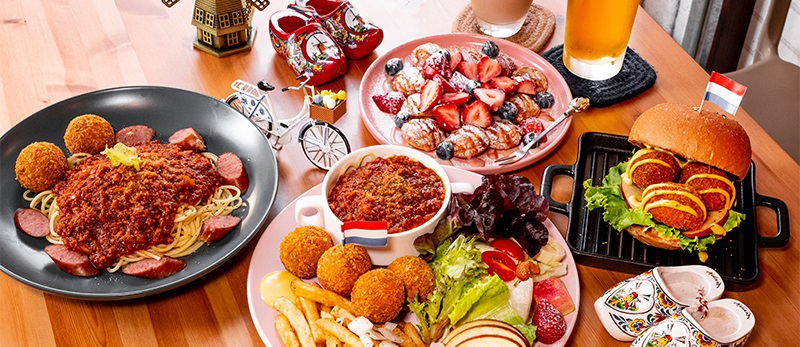
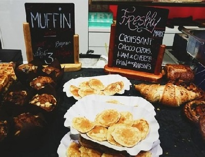
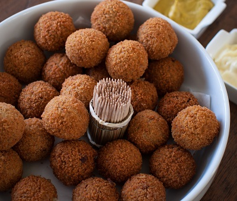
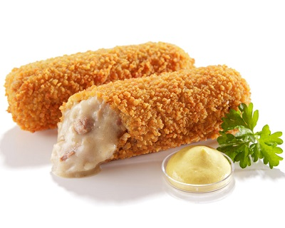

荷蘭Netherlands


食物名稱：荷式小鬆餅 (Poffertjes)
食物介紹：
堪稱是所有來到阿姆斯特丹必吃的國民美食之一，
圓而小巧的外型，一口一顆，
Poffertjes 是荷蘭傳統甜食，
由酵母跟蕎麥粉製成，嚐起來跟台灣的雞蛋糕有異曲同工之妙。
但是小販還會在小鬆餅上淋巧克力醬、糖粉，或搭配新鮮水果一起吃，口味更清爽。
阿姆斯特丹街上隨處可見販售 Poffertjes 的小攤商~

食物名稱：荷蘭炸肉丸 (Bitterballen)
食物介紹：
荷蘭人的啤酒首選下酒菜就是炸肉丸!
Bitterballen 源自 17 世紀西班牙統治荷蘭時期，
荷蘭家庭將前晚的剩菜剩肉製成肉泥，炸成球狀作為今日晚餐開胃菜。
這其實跟 kroket 的做法有點類似，只是形狀不一樣。
通常都是用牛肉泥製成，但考慮到飲食差異，現在酒吧裡也提供由雞肉或豬肉製成的炸肉丸。

食物名稱：荷式可樂餅 (Kroket)
食物介紹：
Kroket 這個詞其實源自於法文的 croquette，從動詞「croquer」變化而來，
指的是咬下酥脆食物時發出的喀滋聲響。
荷蘭的可樂餅為長條狀，內餡有燉牛肉、起司、魚片、奶油白醬。
有時候也會視當季新鮮食材加入蝦子、蘆筍等食材，口味選擇非常多元。
另外，因為製作過程簡單，家家戶戶只要冰箱有剩肉、燉菜，機乎都會直接做成 kroket，因此可說人人都具備製作 kroket 技能，想吃就自己做！